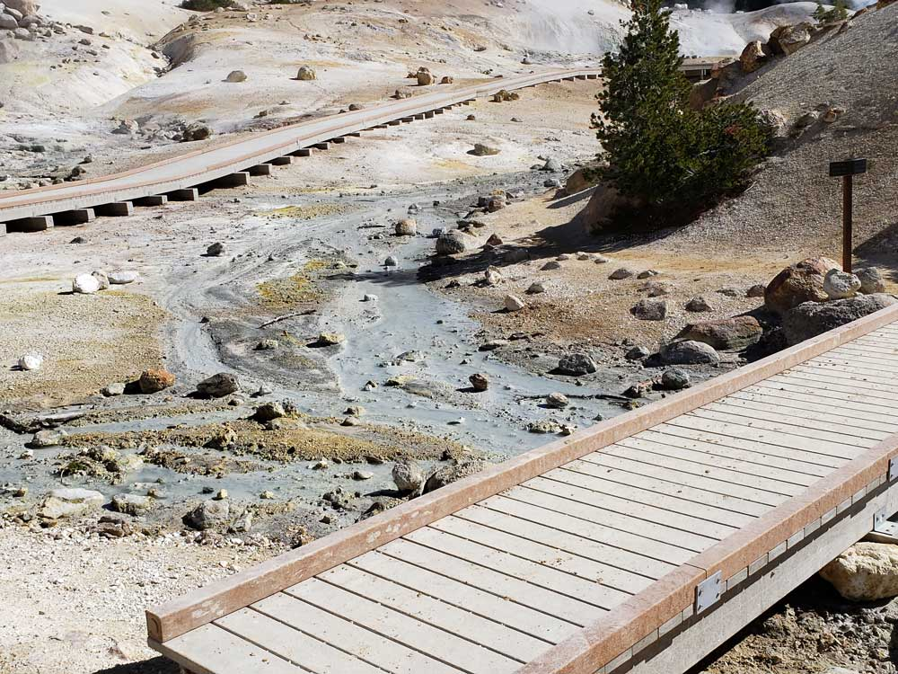
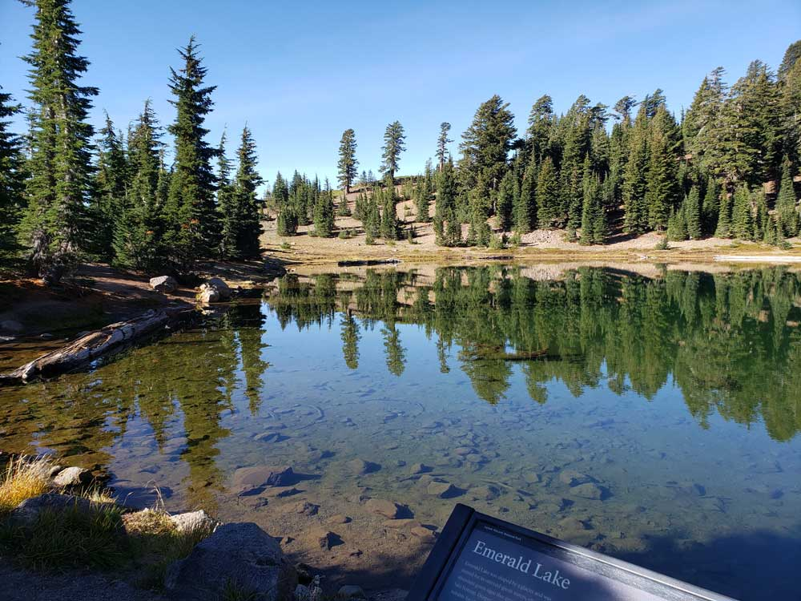
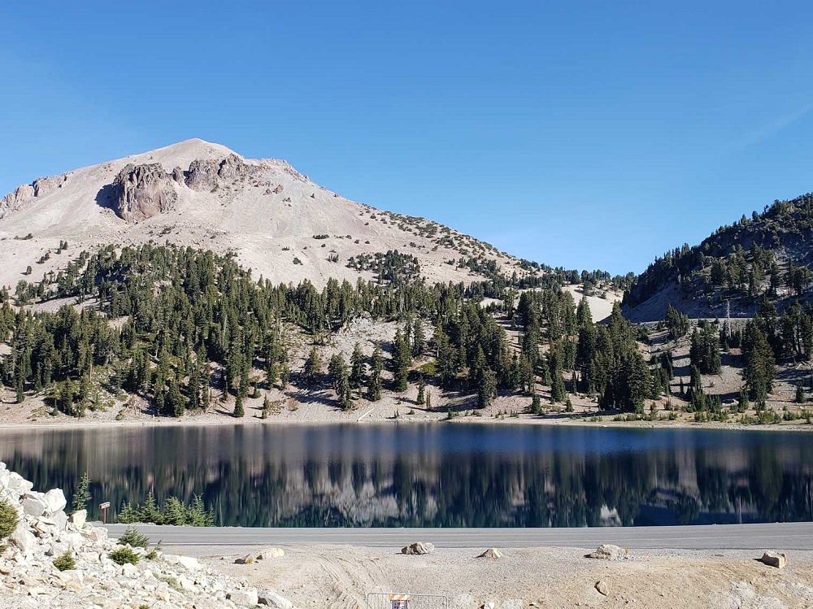
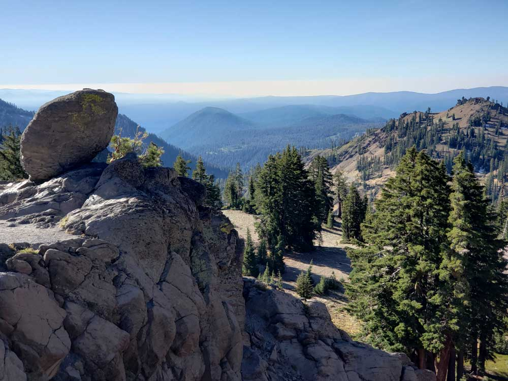

Lassen Volcanic National Park Travel Guide
Park containing largest plug dome volcano in the world and the southernmost volcano in the Cascade Range and is one of the few areas in the world where all four types of volcano can be found with area surrounding is still active with boiling mud pots, fumaroles, and hot springs
Kohm Yah-mah-nee Visitor Center: Open year-round, 9am to 5pm
June 19 to October 31: Daily
November 1 to April 30: Wednesday through Sunday
Closed Thanksgiving and Christmas Day
Loomis Museum (Manzanita Lake): Summer only
Accepts America The Beautiful Pass.
How to Get There
From Sacramento (192 mi): Get on I-5 N from I St. Follow I-5 N to Anderson. Take exit 667B from I-5 N. Follow Dersch Rd and CA-44 E to CA-89 S.
Overview
Lassen Volcanic National Park in Northern California is one of the few places in the world where all four types of volcanoes can be found: plug dome, shield, cinder cone, and composite. At its center is Lassen Peak, a 10,457-foot volcano that is one of the largest plug dome volcanoes in the world and the southernmost active volcano in the Cascade Range. Around the peak, the park's 106,000 acres hold steaming fumaroles, boiling mud pots, bubbling hot springs, lava beds, clear mountain lakes, and wildflower meadows. Its hydrothermal areas, led by Bumpass Hell, are the largest in the Cascades.
The region is the traditional home of the Atsugewi, Yana, Yahi, and Mountain Maidu peoples. In 1907, President Theodore Roosevelt proclaimed Lassen Peak and Cinder Cone national monuments. Then, between 1914 and 1917, Lassen Peak erupted in a series of explosions, including a massive blast on May 22, 1915, that sent an ash cloud miles into the sky and mudflows through what is now the Devastated Area. The eruptions drew national attention, and Congress created Lassen Volcanic National Park in 1916. Lassen is one of the less-visited parks in California. Visitors come to drive the scenic park highway, hike to the summit of Lassen Peak, walk the boardwalks through Bumpass Hell, paddle alpine lakes, and enjoy the peaceful, uncrowded forests.
Park Sections
The heart of the park is the 30-mile Lassen Volcanic National Park Highway (Highway 89), which connects the Southwest Entrance, near the Kohm Yah-mah-nee Visitor Center, with the Northwest Entrance at Manzanita Lake. The southwest area includes Sulphur Works, Brokeoff Mountain, and Bumpass Hell. The middle of the highway passes Lake Helen, the Lassen Peak trailhead, and Summit Lake. The northwest area has Manzanita Lake, the Loomis Museum, and Chaos Crags. Three more remote areas are reached by separate roads from outside the park. Warner Valley, home to Drakesbad Guest Ranch, Boiling Springs Lake, and Devils Kitchen, and Juniper Lake are both reached from the town of Chester on the south side. Butte Lake, in the northeast corner, is the trailhead for Cinder Cone and the Fantastic Lava Beds and is reached from Highway 44. Much of the eastern half of the park is roadless wilderness.
Sightseeing and Scenic Drives
The Lassen Volcanic National Park Highway is one of California's great mountain drives and the main way most visitors see the park. It climbs to 8,512 feet near the Lassen Peak trailhead and has many pull-offs and viewpoints. Highlights from south to north include Sulphur Works, where steaming mud pots bubble right next to the road, Emerald Lake and Lake Helen beneath Lassen Peak, the Bumpass Hell trailhead overlook, the Kings Creek meadows, and Summit Lake. Farther north, the road passes the Devastated Area, where interpretive trails tell the story of the 1915 eruption, and Hot Rock, a large boulder carried down by the mudflows. It then reaches Chaos Jumbles and Manzanita Lake, where Lassen Peak reflects in the water at sunrise.
Hiking
Lassen has more than 150 miles of trails, from short boardwalks to steep summit climbs. Easy walks include the Manzanita Lake Loop (1.8 miles), the Devastated Area Interpretive Trail, Sulphur Works, and the Lily Pond Nature Trail. The park's most popular hike is the 3-mile round trip to Bumpass Hell, where boardwalks wind through a basin of boiling pools, fumaroles, and mud pots. Other moderate favorites include Kings Creek Falls, Chaos Crags, Boiling Springs Lake and Devils Kitchen in Warner Valley, and Mount Harkness. More challenging hikes include the 5-mile round-trip climb of Lassen Peak, which gains about 2,000 feet to sweeping views of Mount Shasta, the steep trail to the top of Cinder Cone, and Brokeoff Mountain. The Pacific Crest Trail also crosses the park. See the Lassen Volcanic trails table for a full list.
Other Activities
In summer, Manzanita Lake is the park's hub for paddling, with kayak, canoe, and stand-up paddleboard rentals at the Manzanita Lake Camper Store and catch-and-release fishing. Motorized boats are not allowed on park lakes. Swimming is popular at Summit Lake, Butte Lake, and Juniper Lake on warm days. Lassen's remote location makes for excellent stargazing, and the park hosts an annual Dark Sky Festival in summer, along with ranger-led astronomy programs. In winter, the park becomes a destination for snowshoeing, cross-country skiing, and backcountry skiing. Rangers lead snowshoe walks from the Kohm Yah-mah-nee Visitor Center, and visitors can snowshoe or ski up the snow-covered highway toward Sulphur Works and Lake Helen.
Flora and Wildlife
The park's forests change with elevation, from Jeffrey and ponderosa pines and white fir at lower levels to red fir, mountain hemlock, and whitebark pine near the timberline. In midsummer, meadows such as Kings Creek and Paradise Meadow fill with lupine, paintbrush, and other wildflowers. The 2021 Dixie Fire burned a large part of the eastern and southern park, and visitors can now see how the forest is recovering. Wildlife includes American black bears, mule deer, golden-mantled ground squirrels, yellow-bellied marmots, and the American pika, which lives in rocky talus slopes and is studied in the park as an indicator of climate change. The rare Sierra Nevada red fox lives in the park's high country. Bald eagles, ospreys, and Clark's nutcrackers are often seen around the lakes. Visitors should store food properly and never feed wildlife.
Access
Lassen is in Northern California, about 50 miles east of Redding and 50 miles northeast of Red Bluff. The Northwest Entrance at Manzanita Lake is about an hour from Redding on Highway 44. The Southwest Entrance is reached from Red Bluff on Highway 36 and Highway 89, or from Chester and Lake Almanor to the southeast. Sacramento is about three hours away, San Francisco about four hours, and Reno about 2.5 hours. The closest airports are in Redding, Sacramento, and Reno. There is no public transportation to or within the park, so a car is needed. Warner Valley and Juniper Lake are reached by roads from Chester, and Butte Lake by a dirt road off Highway 44 east of Old Station. Some of these remote roads are unpaved, and the road to Juniper Lake was closed in 2026 for repairs.
Seasons
Lassen is one of the snowiest places in California, with an average of more than 30 feet of snow a year near Lake Helen, so the park changes dramatically by season. The park highway is closed for most of the winter and is plowed and fully opened in late spring or early summer, usually in June. In 2026, it opened on May 22. High-elevation trails like Bumpass Hell and Lassen Peak often stay buried in snow until July. Summer (July through September) is the best time to visit, when all areas are open, wildflowers bloom, and the lakes are warm enough for paddling. Fall brings crisp weather and fewer visitors until the first big snowstorm closes the highway, usually in October or November. In winter, the highway stays plowed to the Kohm Yah-mah-nee Visitor Center in the south and to Manzanita Lake in the north, giving access to snowshoeing and skiing.
Camping and Lodging
The park has eight campgrounds, including Manzanita Lake (the largest), Summit Lake North and South, Butte Lake, Juniper Lake, Warner Valley, Southwest Walk-in, and Crags, with reservations on Recreation.gov for most of them. Manzanita Lake also has simple camping cabins. Drakesbad Guest Ranch in Warner Valley is the park's historic lodge, known for its hot spring–fed pool and home-cooked meals. It was closed for several years after the 2021 Dixie Fire and has been reopening in phases, so check its current status before planning a stay. Outside the park, the town of Chester on Lake Almanor, about 30 minutes from the Southwest Entrance, has motels, cabins, and lakeside resorts. Mineral and Mill Creek, just outside the Southwest Entrance, have small lodges. On the north side, Shingletown, Old Station, and Hat Creek offer cabins and campgrounds, and Redding, about an hour away, has the most hotel options. Lassen National Forest surrounds the park with many additional campgrounds.
Visitor Centers
The Kohm Yah-mah-nee Visitor Center near the Southwest Entrance is the park's main visitor center and is open all year. It has exhibits on the park's volcanoes, geology, and cultural history, a film, a bookstore, a café, and a gift shop. In summer, the Loomis Museum at Manzanita Lake displays historic photographs of the 1914–1917 eruptions taken by Benjamin Loomis and offers ranger programs and information. The Manzanita Lake Camper Store sells supplies and rents boats. Ranger stations at Butte Lake, Warner Valley, and Juniper Lake are staffed during the summer season.
This article uses material from the Wikipedia article "Lassen Volcanic National Park", which is released under the Creative Commons Attribution-Share-Alike License 3.0
This article uses material from nps.gov "Lassen Volcanic National Park" and "Drakesbad and Warner Valley Campground Closed for 2024"
Featured Trails
Brokeoff Mountain
Prominent peak formed from a collapsed ancient volcano, featuring a strenuous alpine trail with panoramic views of surrounding volcanic landscapes.
Prominent peak formed from a collapsed ancient volcano, featuring a strenuous alpine trail with panoramic views of surrounding volcanic landscapes.
Bumpass Hell
Hydrothermally altered geothermal area that spans 16 acres and has hot springs, fumaroles, and boiling mudpots
Hydrothermally altered geothermal area that spans 16 acres and has hot springs, fumaroles, and boiling mudpots
Butte Lake
Remote lake framed by ponderosa pines and volcanic rock, offering access to hiking, kayaking, and views of lava flows and cinder cones.
.jpg){kind=link}
Chaos Crags
Youngest group of lava domes in Lassen Volcanic National Park formed as six dacite domes 1,100-1,000 years ago, one dome collapsing during an explosive eruption about 70 years later
Cinder Cone
Cinder cone volcano in Lassen Volcanic National Park, 10 miles (16 km) northeast of Lassen Peak and provides an excellent view of Brokeoff Mountain, Lassen Peak, and Chaos Crags
Devils Kitchen
Geothermal basin featuring steaming vents, bubbling mudpots, and colorful mineral deposits accessible via a forested hiking trail.
Drakesbad Guest Ranch
Historic backcountry lodge featuring rustic cabins, natural hot spring bathing, and guided outdoor activities centered around hiking, horseback riding, and wilderness relaxation.
Emerald Lake
Roadside alpine lake with vivid green waters caused by aquatic vegetation, framed by volcanic peaks and seasonal wildflowers.
Juniper Lake
Remote alpine lake surrounded by forested slopes and volcanic peaks, offering primitive camping, kayaking, and access to backcountry trails.
Kings Creek Falls
Scenic waterfall cascading 30 feet through a forested canyon, accessible via a moderate loop trail featuring meadows, creeks, and volcanic terrain.
Lassen Peak
Southernmost active volcano in the Cascade Range of the Western United States, reaching an elevation of 10,457 ft
Outhernmost active volcano in the Cascade Range of the Western United States, reaching an elevation of 10,457 ft
Loomis Museum
Historic stone museum featuring exhibits on volcanic eruptions, geology, wildlife, and early photography documenting the region’s dramatic natural history.
Manzanita Lake
Scenic alpine lake surrounded by forested shores and volcanic peaks, offering easy walking trails, fishing, kayaking, and reflective views of nearby mountains.
Butte Lake
A forested volcanic summit featuring a historic fire lookout tower that offers sweeping panoramic views across mountain ranges, alpine lakes, and rugged wilderness.
Snag Lake
Remote alpine lake surrounded by volcanic landscapes, lava fields, and forested wilderness offering quiet shoreline views and abundant wildlife.
Sulphur Works
Easiest of the park's hydrothermal areas to access, this hydrothermal area is an otherworldly place of vibrant colors, pungent scents, and shifting ground that is both ancient and new
Summit Lake
Scenic alpine lake with a shoreline trail and calm waters set amid volcanic peaks and forested high-country landscapes.
Warner Valley
Remote mountain valley featuring geothermal springs, historic ranch sites, alpine meadows, wildlife habitat, and access to some of the most scenic backcountry landscapes in the park.



